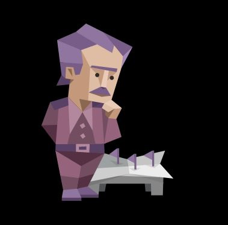

Myers Briggs
INTJ: Architect
Role: Analyst
Stratagy: Constant Improvment
"These personalities can be both the boldest of dreamers and the bitterest of pessimists. Architects believe that, through willpower and intelligence, they can achieve even the most challenging of goals. But they may be cynical about human nature more generally, assuming that most people are lazy, unimaginative, or simply doomed to mediocrity.
Architects derive much of their self-esteem from their knowledge and mental acuity. In school, people with this personality type may have been called “bookworms” or “nerds.” But rather than taking these labels as insults, many Architects embrace them. They are confident in their ability to teach themselves about – and master – any topic that interests them, whether that’s coding or capoeira or classical music"
- From the Architect gernal profile page.
You can view the full results here.
What's your learning style?
Big Five
>>> Home?